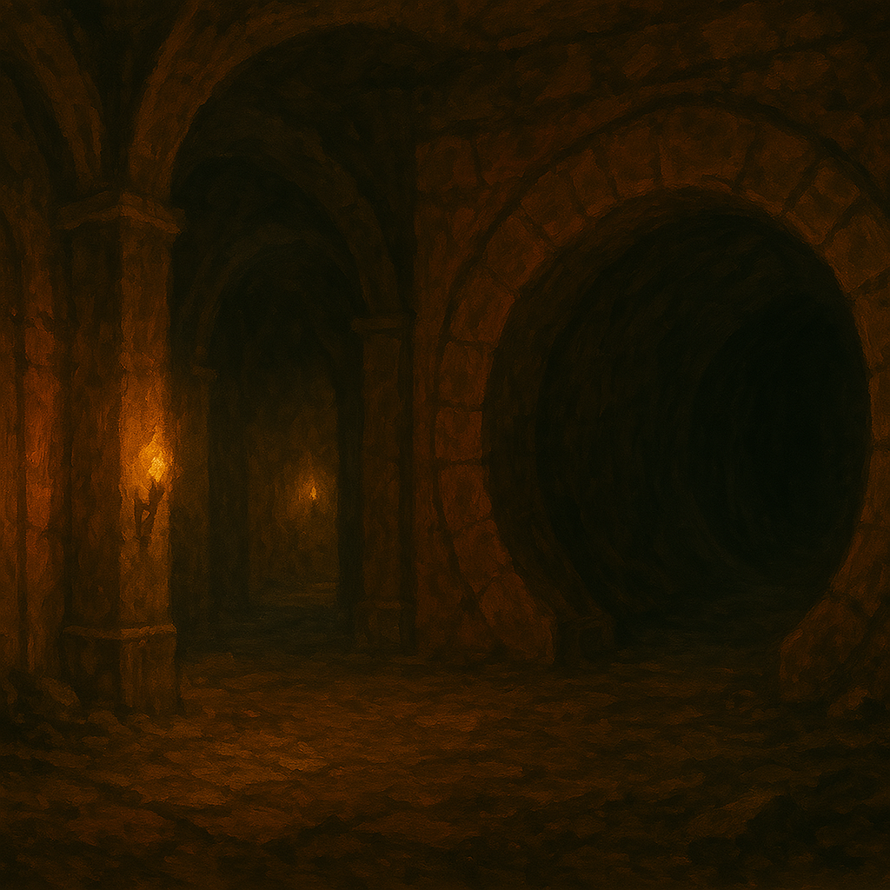

Chapter 2: Venture into Darkness
Beneath the Temple


Beneath the Temple
15048日期未知
矗立在冒險者面前的，是一個巨大的牢籠，裡面困著一個瘦弱、橘髮，膚色慘白的年輕女子。在和女子溝通後，冒險者們成功打開了牢籠，拯救了他出來。
這名女子是一名半妖精，自稱來自貝倫的崔夏。他的父母是拉索斯的忠實信徒，卻因為遭到背叛，而使崔夏被關進地下城。在冒險者們的陪伴與照顧下，崔夏與冒險者們一同繼續前進。
在路程中，崔夏主動找了幾位不同的冒險者和他們攀談，想了解他們是怎麼樣的人。其中，主動伸出援手的烏柯最得崔夏的心，而崔夏的經歷也讓薩梅爾因為有類似的童年經歷而感同身受。冒險者們也發現崔夏看得懂牆壁上的拉索斯語。這對他們在地下城的冒險有很大的幫助。
在地下城中，因為看不見陽光，冒險者們已經漸漸失去了時間觀。崔夏因為疲倦而睡著了，烏柯背著他前進，卻發現在背起崔夏後，自己之前撿到的神秘石頭竟然開始不斷地震動。出於好奇，烏柯放下崔夏，取出了神祕石，試圖將石頭放在崔夏手上，石頭卻直接融入了崔夏的體內，頓時他的身體發出了紫色的亮光後，光芒就消失了，就像什麼都沒有發生過一樣。在眾人驚駭之餘，沒有人知道到底發生了什麼事，更不清楚這是好是壞。
背著熟睡的崔夏，冒險者們走入了一座被漆成紅色的大廳，兩側各有五個大水管似的金屬圓框，深不見底。冒險者們覺得有異，做好了戰鬥的預備，在大廳等待了十來分鐘，圓框內逐漸傳來腳步聲，腳步聲越來越大，直到數隻哥布林從圓框內踏了出來。
走出水管的總共有十隻哥布林，以及一隻哥布林王。三隻哥布林在戰鬥前就被突襲的冒險者殺死了。站在最後的兩隻哥布林分別拿了一塊木板，為哥布林王搭起了一座小舞台。站上小舞台哥布林王透過通用語向冒險者們邀約成為哥布林戰隊的一員，卻隨即被沒有聽到他的宣言，從異界傳送回來的YHWH用法術射死。看見自己的王被打死，剩餘的哥布林倉皇逃走，只有一隻哥布林因為被烏柯擊暈而留了下來。YHWH用百寶袋取走了哥布林的牙齒，而烏柯則取走了哥布林王頭上掉落的王冠，依照崔夏的解讀，上面寫著拉索斯語的「地底王」。隨後，烏犧奧泥用繩子將被俘虜的哥布林綁在他身上，每當哥布林吵鬧或踰矩時，烏犧奧泥便啃斷哥布林的一根指頭作為懲罰。
冒險者們決定往哥布林王走出來的水管內進行探索。走了好一段時間，水管內已失去光線，且酷爆似乎發出了不安的叫聲，因此冒險者們決定折返。
冒險者們繼續往前走了一段時間，來到了一座上鎖的大門。崔夏用了他工具包內的器具，花了點時間，成功把門鎖解開，大夥兒踏入了一座木質地板的房間，中間是一座祭壇。而躺在祭壇上的，是來自沃瓦倫鎮的鎮長夫人潔絲敏。潔絲敏身上插了一把刀，上面用拉索斯語寫著「犧牲」和「血脈」，而崔夏也在祭壇旁唸出了他的全名，潔絲敏・卓尼森・沃倫。卓尼森。那是屬於皇帝一族的姓氏。
悲痛之餘，米多莉決定將潔絲敏裝進百寶袋，以將他帶到地面安葬。在米多莉、YHWH與帕拉丁挪動屍體的同時，烏柯做了個惡作劇，把祭壇上的蠟燭全部熄滅，挪動屍體的三人懷疑是不是觸動到了祭壇的機關，連忙把屍體放回原處，在烏柯的操弄下，蠟燭也全亮了，此舉讓多姆尼爾感到非常開心。不過最後眾人還是成功將潔絲敏放入了百寶袋內。
大夥兒決定在這個房間內簡單休息，崔夏跑去關心了站在遠處的米多莉，並透露自己腦中出現了可怕的聲音，要他做壞事，不過他很努力的忍住了。後來大家圍坐了起來，而好奇的崔夏也開始詢問大家的來歷。中途，烏柯也前去和米多莉搭話，卻因為附身在米多莉體內的拉索斯教徒靈魂的控制，差一點起了衝突。
烏柯也利用了這段時間，試著用他的能力和被俘虜的哥布林（此時已被烏犧奧泥冠名為「尼可」）以及酷爆溝通。透過烏柯，大家得知酷爆的本名為戴倫，但大家還是決定繼續叫他酷爆；而尼可則說了他的本名叫「呱啦」，也透露他們來自地下城內的一個哥布林部落，那裡只有哥布林和一些武器，並沒有冒險者們想像中的金銀財寶。
烏犧奧泥靈機一動，請烏柯拿出了哥布林王原本戴在頭上的皇冠，放在尼可頭上，而米多莉也拿出了之前從Tai Tai我還要那裡取得的衣物，作為尼可的披風，並用小袋子內的沙子撒在尼可身上，眾人將尼可加冕為地底王尼可大人。
眾人起身離開房間，隔壁的房間空空蕩蕩，裡面只有一個寶箱。在YHWH用了法術試圖打開卻失敗後，崔夏嘗試開鎖，開了很久卻始終打不開，而且發現自己的手竟然黏在鎖頭上了。為了拯救崔夏，大家試圖切開鎖頭，卻發現這個寶箱竟然是一隻擬態怪變成的，也只好和他進行戰鬥。
擊敗了寶箱擬態怪後，大家鬆了一口氣，卻在通往下一個門的時候發現這個木門是另一隻擬態怪變成的而遭到攻擊。在打敗了第二隻擬態怪後，大家選擇回到上一個房間做長休息。
第一班的夜班，米多莉似乎又被控制住，試圖刺龍恩，驚動了大家，所有人試圖攻擊米多莉，終於將他擊暈。大家決定換到見到擬態怪的房間休息。然而，米多莉又再次被喚醒試圖攻擊，守夜和交班的冒險者決定把他綁起控制住。
在烏柯和家亨守夜時，他們發現了原本是擬態怪偽裝的木門後的空間似乎傳來了嗡嗡的聲響，且那扇門原本通往一個陰暗的長廊（上面有拉索斯的文字），卻在嗡嗡聲後換了一個房間，一個明亮房型的空間。他們也發現在兩個房間交界的門框似乎有逐漸淡去的魔法能量。
15048 Date Unknown
Standing in front of the adventurers, is a giant cage. A weak, ginger-haired, pale-skinned young lady was trapped in in. After communication with the lady, the adventurers opened the cage, and rescued her.
This lady was a half-elf, claiming herself to be Trisha of Baylon. Her parents were loyal followers of the Laxthos, but was betrayed, and so Trisha was locked in this dungeon. With the companion of the adventurers, Trisha continue on the journey with the party.
On the road, Trisha talked to several different adventurers, wanting to know what kind of people they were. Uko was the one that Trisha liked the most, and Trisha's experience resonated with Samael, who had a similiar childhood experience. The adventurers found that Trisha could read the Laxthosian language carved in teh wall. It would be great help in their adventure.
In the dungeon, due to the absent of sun light, the adventurers had lost track of time. Trisha was asleep, and so Uko carried her on his back. He found that the mysterious stone that he retrived earlier started to vibrate. Due to curiousness, Uko put down Trisha, took the stone, and place it on Trisha's palm. The stone merged into her body. Purple light emitted from her body, and disappeared, like nothing happened. No one had any idea what happened, nor had the ability to determine if that was a good thing or not.
With the sleeping Trisha on his back, the adcenturers walked into a hall painted in red. There were five giant metal tubes on both sides. The adventurers found it to be suspicious, and prepared for battle. After waiting for 10-ish minutes in the hall, they started hearing steps in the tube. It got louder and louder, until several goblins stepped out of the tube.
There were a total of 10 goblins, and a goblin king. Three of the goblins were killed by the ambushing adventurers before the battle. Two goblins who stood at the back each got a wooden board, trying to build a stage for the goblin king. The goblin king invited the party to join their goblin assault team in the common tongue, but was killed by YHWH with magic, who got transfered back by his magic from the void, and didn't hear the goblin king's speech.
Seeing their king dead, the goblins ran away panically. Only one of the goblin was knocked prone by Uko and couldn't leave. YHWH collected the goblin teeth and put them into the bag of holding, while Uko took the crown from the goblin king. It reads "the King of the Underground", as interpreted by Trisha. After that, Usioni used his rope to tie the goblin on his body. Whenever the goblin misbehave, he bit down one of its finger as a punishment.
The adventurers decided to walk into the tube where the goblin king came from to explore. They walked for some time, and it only got darker. Also, Kubao kept barking uneasily. So, the adventurers decided to head back.
The adventurers kept on walking for a while, finding a locked door. Trisha used her tools and spent some time to unlock the door. The party stepped into a room with wooden floor, with an altar in it. Laying on the atlar, was the wife of the mayor of Vowalon, Jasmine. She was stabbed by a knife, with "Sacrifice" and "Bloodline" written in Laxthosian on it. Trisha also read her full name which was written on the alter: "Jasmine Dranison Warren". Dranison, was the family name of the emperor.
In grief, Midori decided to put Jasmine into the bag of holding, to bring her to the surface and bury her. While Midori, YHWH and Paladin were moving the body, Uko made a prank. He put out all the candles on the altar, and the three doubted if they triggered any mechanism on the altar. As they put Jasmine's body back to the altar, the candles were lit again by Uko. This made Domneil very happy. The group finally had Jasmine in the bag of holding.
The group decided to take a short rest in the room. Trisha went to Midori, who was standing far away. She told Midori that she hear voices in her head, telling her to do bad things, but she tried hard to stop it. Later, the party gathered up and sat in a circle, the curious Trisha started asking where everyone was from. In the middle of all this, Uko also went to Midori, wanting to talk to her. However, due to the Laxthosian spirit living in Midori's body, they almost got into a fight.
Uko also tried to communicate with the captured goblin, who was now named "Knicol" by Usioni, and Kubao with his ability. Through Uko, the party learned that Kubao's name was originally Darren, but they decided to call him Kubao; Knicol also said that his name was actually Guala, and revealed that they were from an underground goblin tribe in the dungeon. There were only goblins and some weapons, no treasure at all.
Usioni had an idea. He asked Uko to take out the crown that was taken from the goblin king, and placed it on Knicol's head. Midori also took the clothes that she took from Tai Tai Wo Hai Yao as Knicol's cape. She poured some sands from her pack on Knicol. The party crowned Knicol as "King Knicol, Lord of the Underground".
The party stood up and left the room. The next room was empty, with a single treasure chest. YHWH tried to open the chest with his spell but failed. Trisha tried to open it with her tools, but it took her a long time and she still couldn't succeed. She also found her hand stuck on the lock. To save Trisha, the party tried to cut the lock open, only to find it to be a mimic. And so they had to fight it.
After defeating the mimic, everyone was relieved. However, they found the wooden door to the next room to be another mimic. Defeating the second mimic, the party decided to return to the previous room for a long rest.
During the first night shift, Midori seemed to be controlled again, trying to stab Ron, and startled everyone. The party attacked Midori, finally knocked her prone. They decided to go to the mimic room for rest. However, Midori rose again and attacked. The night shift the next shift decided to tie her up.
When Uko and Jiaheng took their night shift, they found the space behind the original mimic door hummed. A new bright room emerged right after that, replacing the dark hallway that was originally there. They found fading magical energy between the two rooms.